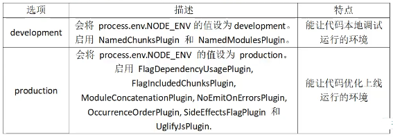

webpack
webpack
webpack是一个模块打包工具，可以使用它管理项目中的模块依赖，并编译输出模块所需的静态文件。它可以很好地管理、打包开发中所用到的HTML，CSS，JavaScript和静态文件（图片，字体）等，让开发更高效。对于不同类型的依赖，webpack有对应的模块加载器，而且会分析模块间的依赖关系，最后合并生成优化的静态资源。
与gulp，grunt的区别
区别：webpack支持代码分割，模块化（AMD，CommonJ，ES2015），全局分析
webpack的基本功能和工作原理
- 代码转换：TypeScript 编译成 JavaScript、SCSS 编译成 CSS 等等
- 文件优化：压缩 JavaScript、CSS、HTML 代码，压缩合并图片等
- 代码分割：提取多个页面的公共代码、提取首屏不需要执行部分的代码让其异步加载
- 模块合并：在采用模块化的项目有很多模块和文件，需要构建功能把模块分类合并成一个文件
- 自动刷新：监听本地源代码的变化，自动构建，刷新浏览器
- 代码校验：在代码被提交到仓库前需要检测代码是否符合规范，以及单元测试是否通过
- 自动发布：更新完代码后，自动构建出线上发布代码并传输给发布系统。
webpack 构建过程
从entry里配置的module开始递归解析entry依赖的所有module
每找到一个module，就会根据配置的loader去找对应的转换规则
对module进行转换后，再解析出当前module依赖的module
这些模块会以entry为单位分组，一个entry和其所有依赖的module被分到一个组Chunk
最后webpack会把所有Chunk转换为文件输出
在整个流程中webpack会在恰当的时机执行plugin里定义的逻辑
简单总结：
- 初始化：启动构建，读取与合并配置参数，加载 Plugin，实例化 Compiler
- 编译：从 Entry 出发，针对每个 Module 串行调用对应的 Loader 去翻译文件的内容，再找到该 Module 依赖的 Module，递归地进行编译处理
- 输出：将编译后的 Module 组合成 Chunk，将 Chunk 转换成文件，输出到文件系统中
webpack 打包原理
将所有依赖打包成一个bundle.js，通过代码分割成单元片段按需加载。
核心概念
入口（entry）
入口指示webpack以哪个文件为入口起点开始打包，分析构建内部依赖图。默认为./src/index.js
输出（output）
输出指示webpack打包后的资源bundles输出到哪里去，以及如何命名。默认为./dist
加载器（loader）
loader本质就是一个函数，让webpack能够去处理哪些非JS文件（webpack本身只理解JS）。
在webpack.config.js中，loader在 module.rules 中配置，作为模块的解析规则，类型为数组。每一项都是一个 Object，内部包含了 test（类型文件）、loader、options （参数）等属性。
插件（plugin）
插件可以用于执行范围更广的任务。插件的范围包括，从打包优化和压缩，一直到重新定义环境中的变量等。
在webpack.config.js中，插件在 plugins 中单独配置，类型为数组，每一项是一个 Plugin 的实例，参数都通过构造函数传入。插件需要引入才能使用：
const HtmlWebpackPlugin = require('html-webpack-plugin')模式（mode）
模式指示webpack使用相应模式的配置。

- 其他概念：bundle是webpack打包出来的文件。chunk是webpack在进行模块的依赖分析的时候，代码分割出来的代码块。module是开发中的单个模块。
webpack.config.js
webpack的配置文件，运行webpack指令时，会加载里面的配置。
所有构建工具都是基于node.js平台运行的，模块化默认采用commonJS。
// resolve用来拼接绝对路径
const { resolve } = require('path');
module.exports = {
//入口起点
entry: './src/index.js',
//输出
output: {
//输出文件名
filename: 'built.js',
//输出路径，__dirname nodejs变量，代表当前文件的目录绝对路径
path: resolve(__dirname, 'build')
},
//loader配置
module: {
rules:[
//详细的loader配置
]
},
//plugins的配置
plugins: [
//详细的plugin配置
],
//模式（只能使用一个）
mode: 'development',
// mode: 'production'
}webpack常见loader和plugin
loader
babel-loader: 将ES6+转移成ES5-css-loader，style-loader：解析css文件，能够解释@import url()等file-loader：直接输出文件，把构建后的文件路径返回，可以处理很多类型的文件vue-loader：加载 Vue.js 单文件组件html-loader：负责引入html文件中的img图片，从而能被url-loader处理url-loader：打包图片
// url-loader增强版的file-loader，小于limit的转为Base64,大于limit的调用file-loader
npm install url-loader -D
// 使用
module.exports = {
module: {
rules: [{
test: /\.(png|jpg|gif)$/,
use: [{
loader: 'url-loader',
options: {
outputPath: 'images/',
limit: 500 //小于500B的文件打包出Base64格式，写入JS
}
}]
}]
}
}plugins
html-webpack-plugin: 压缩html
//引入
const HtmlWebpackPlugin = require('html-webpack-plugin')
module.exports = {
//...
plugins: [
new HtmlWebpackPlugin({
filename: 'index.html', // 配置输出文件名和路径
template: './public/index.html', // 配置要被编译的html文件
hash: true,
// 压缩 => production 模式使用
minify: {
removeAttributeQuotes: true, //删除双引号
collapseWhitespace: true //折叠 html 为一行
}
})
]
}clean-webpack-plugin: 打包器清理源目录文件，在webpack打包器清理dist目录
npm install clean-webpack-plugin -D
// 修改webpack.config.js
const cleanWebpackPlugin=require('clean-webpack-plugin')
module.exports = {
plugins: [new cleanWebpackPlugin(['dist'])]
}如何自动生成webpack配置？
可以用一些官方脚手架
- webpack-cli
//安装
npm i webpack webpack-cli -D- vue-cli
// 首先安装
npm install -g @vue/cli
// 新建项目hello
vue create hello
复制代码- nuxt-cli
// 确保安装了npx,npx在npm5.2.0默认安装了
// 新建项目hello
npx create-nuxt-app hellowebpack如何配置单页面和多页面的应用程序？
- 单个页面
module.exports = {
entry: './path/to/my/entry/file.js'
}- 多页面应用程序
module.entrys = {
entry: {
pageOne: './src/pageOne/index.js',
pageTwo: './src/pageTwo/index.js'
}
}文件监听原理
在发现源码发生变化时，自动重新构建出新的输出文件。
Webpack开启监听模式，有两种方式：
- 启动 webpack 命令时，带上 –watch 参数
- 在配置 webpack.config.js 中设置 watch:true
缺点：每次需要手动刷新浏览器
原理：轮询判断文件的最后编辑时间是否变化，如果某个文件发生了变化，并不会立刻告诉监听者，而是先缓存起来，等 aggregateTimeout 后再执行。
module.export = {
// 默认false,也就是不开启
watch: true,
// 只有开启监听模式时，watchOptions才有意义
watchOptions: {
// 默认为空，不监听的文件或者文件夹，支持正则匹配
ignored: /node_modules/,
// 监听到变化发生后会等300ms再去执行，默认300ms
aggregateTimeout:300,
// 判断文件是否发生变化是通过不停询问系统指定文件有没有变化实现的，默认每秒问1000次
poll:1000
}
}webpack-dev-server
webpack-dev-server使用内存来存储webpack开发环境下的打包文件（不会有本地输出），并且可以使用模块热更新，相比传统http服务器开发更加简单高效。
dev-server配置：
module.exports = {
entry:...,
output:{...
},
module:{...
},
plugin:[...
],
mode: '...',
devServer:{
contentBase: resolve(__dirname,'build'),
compress: true,
port: 8080
}
}启动dev server的指令：npx webpack-dev-server
什么是模块热更新？
webpack的一个功能，可以使代码修改后不用刷新浏览器就自动更新，高级版的自动刷新浏览器。
热更新又称热替换（Hot Module Replacement），缩写为 HMR。
HMR的核心就是客户端从服务端拉去更新后的文件，准确的说是 chunk diff (chunk 需要更新的部分)，实际上 WDS 与浏览器之间维护了一个 Websocket，当本地资源发生变化时，WDS 会向浏览器推送更新，并带上构建时的 hash，让客户端与上一次资源进行对比。客户端对比出差异后会向 WDS 发起 Ajax 请求来获取更改内容(文件列表、hash)，这样客户端就可以再借助这些信息继续向 WDS 发起 jsonp 请求获取该chunk的增量更新。
后续的部分(拿到增量更新之后如何处理？哪些状态该保留？哪些又需要更新？)由 HotModulePlugin 来完成，提供了相关 API 以供开发者针对自身场景进行处理，像react-hot-loader 和 vue-loader 都是借助这些 API 实现 HMR。
dev-server是怎么跑起来的
webpack-dev-server支持两种模式来自动刷新页面
- iframe模式（页面放在iframe中，当发送改变时重载） 无需额外配置，只要以这种格式url访问即可。
http://localhost:8080/webpack-dev-server/index.html - inline模式（将webpack-dev-server的客户端入口添加到bundle中） inline模式下url不用发生变化，但启动inline模式分两种情况
// 以命令行启动webpack-dev-server有两种方式
// 方式1 在命令行中添加--inline命令
// 方式2 在webpack-config.js添加devServer:{inline: true}
// 以node.js API启动有两种方式
// 方式1 添加webpack-dev-server/client?http://localhost:8080/到webpack配置的entry入口点
config.entry.app.unshift("webpack-dev-server/client?http://localhost:8080/");
// 将<script src="http://localhost:8080/webpack-dev-server.js"></script>添加到html文件中如何优化 Webpack 的构建速度？
- 使用
高版本的 Webpack 和 Node.js 多进程/多实例构建：HappyPack(不维护了)、thread-loader压缩代码- 多进程并行压缩
- webpack-paralle-uglify-plugin
- uglifyjs-webpack-plugin 开启 parallel 参数 (不支持ES6)
- terser-webpack-plugin 开启 parallel 参数
- 通过 mini-css-extract-plugin 提取 Chunk 中的 CSS 代码到单独文件，通过 css-loader 的 minimize 选项开启 cssnano 压缩 CSS。
- 多进程并行压缩
图片压缩- 使用基于 Node 库的 imagemin (很多定制选项、可以处理多种图片格式)
- 配置 image-webpack-loader
缩小打包作用域：- exclude/include (确定 loader 规则范围)
- resolve.modules 指明第三方模块的绝对路径 (减少不必要的查找)
- resolve.mainFields 只采用 main 字段作为入口文件描述字段 (减少搜索步骤，需要考虑到所有运行时依赖的第三方模块的入口文件描述字段)
- resolve.extensions 尽可能减少后缀尝试的可能性
- noParse 对完全不需要解析的库进行忽略 (不去解析但仍会打包到 bundle 中，注意被忽略掉的文件里不应该包含 import、require、define 等模块化语句)
- IgnorePlugin (完全排除模块)
- 合理使用alias
提取页面公共资源：- 基础包分离：
- 使用 html-webpack-externals-plugin，将基础包通过 CDN 引入，不打入 bundle 中
- 使用 SplitChunksPlugin 进行(公共脚本、基础包、页面公共文件)分离(Webpack4内置) ，替代了 CommonsChunkPlugin 插件
- 基础包分离：
DLL：- 使用 DllPlugin 进行分包，使用 DllReferencePlugin(索引链接) 对 manifest.json 引用，让一些基本不会改动的代码先打包成静态资源，避免反复编译浪费时间。
- HashedModuleIdsPlugin 可以解决模块数字id问题
充分利用缓存提升二次构建速度：- babel-loader 开启缓存
- terser-webpack-plugin 开启缓存
- 使用 cache-loader 或者 hard-source-webpack-plugin
Tree shaking- 打包过程中检测工程中没有引用过的模块并进行标记，在资源压缩时将它们从最终的bundle中去掉(只能对ES6 Modlue生效) 开发中尽可能使用ES6 Module的模块，提高tree shaking效率
- 禁用 babel-loader 的模块依赖解析，否则 Webpack 接收到的就都是转换过的 CommonJS 形式的模块，无法进行 tree-shaking
- 使用 PurifyCSS(不在维护) 或者 uncss 去除无用 CSS 代码
- purgecss-webpack-plugin 和 mini-css-extract-plugin配合使用(建议)
Scope hoisting- 构建后的代码会存在大量闭包，造成体积增大，运行代码时创建的函数作用域变多，内存开销变大。Scope hoisting 将所有模块的代码按照引用顺序放在一个函数作用域里，然后适当的重命名一些变量以防止变量名冲突
- 必须是ES6的语法，因为有很多第三方库仍采用 CommonJS 语法，为了充分发挥 Scope hoisting 的作用，需要配置 mainFields 对第三方模块优先采用 jsnext:main 中指向的ES6模块化语法
动态Polyfill- 建议采用 polyfill-service 只给用户返回需要的polyfill，社区维护。 (部分国内奇葩浏览器UA可能无法识别，但可以降级返回所需全部polyfill)
更多优化请参考官网-构建性能
如何利用webpack优化前端性能？
- 压缩代码。删除多余的代码、注释、简化代码的写法等。
- 利用CDN加速。在构建过程中，将引用的静态资源路径修改为CDN上对应的路径。
- 删除死代码即不会运行的片段（
Tree Shaking）。 - 优化图片，对于小图可以使用
base64的方式写入文件中 - 按照路由拆分代码，实现按需加载，提取公共代码
- 给打包出来的文件名添加哈希，实现浏览器缓存文件
文件指纹
文件指纹是打包后输出的文件名的后缀。
Hash：和整个项目的构建相关，只要项目文件有修改，整个项目构建的 hash 值就会更改Chunkhash：和 Webpack 打包的 chunk 有关，不同的 entry 会生出不同的 chunkhashContenthash：根据文件内容来定义 hash，文件内容不变，则 contenthash 不变
参考
本博客所有文章除特别声明外，均采用 CC BY-SA 4.0 协议 ，转载请注明出处！